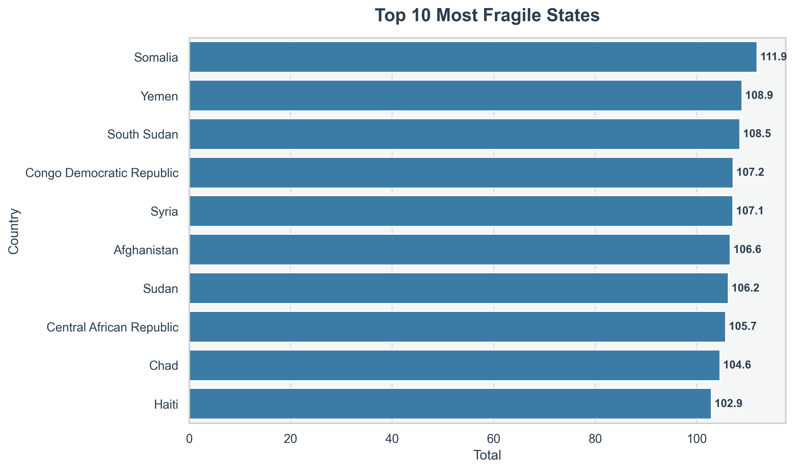
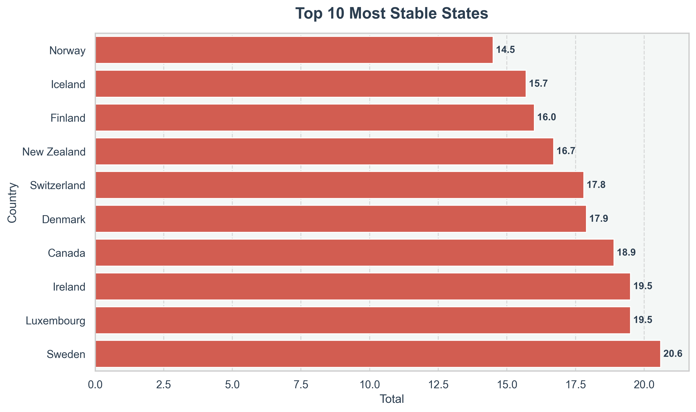
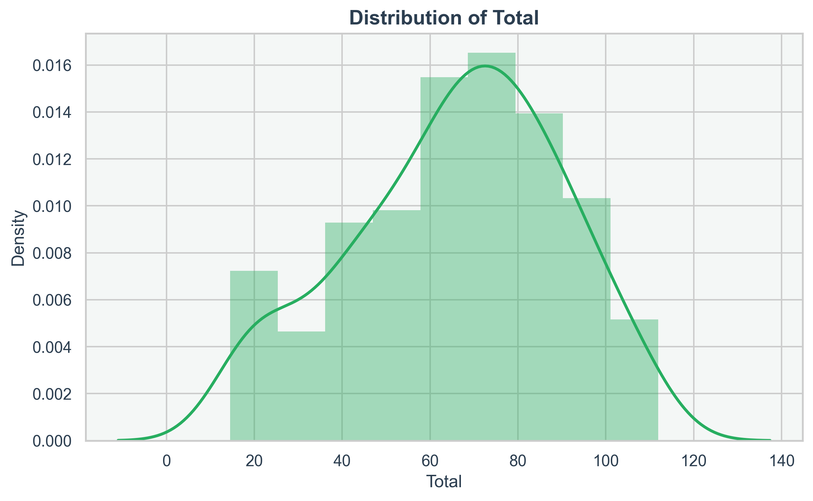
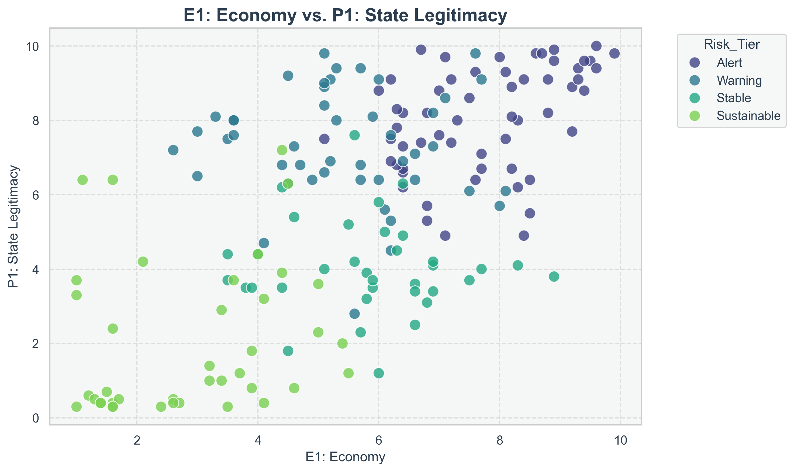
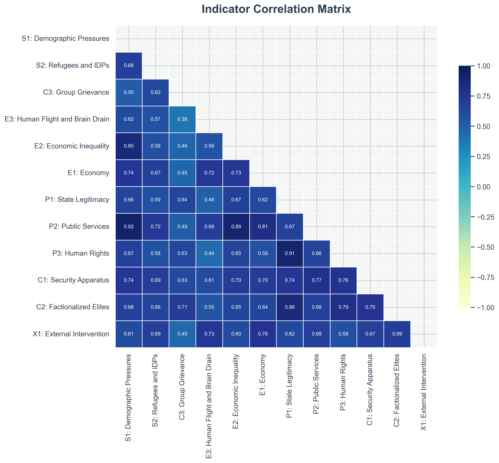

Fragile States Index Analysis | Generated on May 24, 2026
179
111.89999999999999 (Somalia)
14.5 (Norway)
This automated enterprise report provides a comprehensive analysis of the Fragile States Index dataset. The data was cleaned, anomalies were handled, and machine learning (K-Means Clustering) was applied to categorize countries into distinct risk tiers.


Countries were grouped into 4 distinct risk tiers based on 12 socio-economic and political indicators using K-Means Clustering.


The correlation matrix below illustrates the relationships between various pressures, such as economic inequality, state legitimacy, and demographic pressures. A value closer to 1.0 indicates a strong positive correlation.

| Country | Rank | Total | Risk_Tier |
|---|---|---|---|
| Somalia | 1 | 111.9 | Alert |
| Yemen | 2 | 108.9 | Alert |
| South Sudan | 3 | 108.5 | Alert |
| Congo Democratic Republic | 4 | 107.2 | Alert |
| Syria | 5 | 107.1 | Alert |